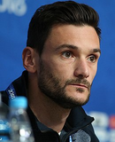
| N° | 1 |
|---|---|
| Poste | G |
| Nom | Hugo Lloris |
| Date de naissance | 26/12/1986 (31 ans) |
| Sélection | 98 |
| But | 0 |
| Club | Tottenham Hotspur |
| Depuis | 2012 |
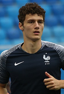
| N° | 2 |
|---|---|
| Poste | D |
| Nom | Benjamin Pavard |
| Date de naissance | 28/3/1996 (22 ans) |
| Sélection | 6 |
| But | 1 |
| Club |  VfB Stuttgart VfB Stuttgart |
| Depuis | 2017 |
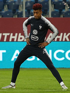
| N° | 3 |
|---|---|
| Poste | D |
| Nom | Presnel Kimpembe |
| Date de naissance | 13/8/1995 (22 ans) |
| Sélection | 2 |
| But | 0 |
| Club |  Paris Saint Germain Paris Saint Germain |
| Depuis | 2016 |
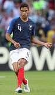
| N° | 4 |
|---|---|
| Poste | D |
| Nom | Raphaël Varane |
| Date de naissance | 25/4/1993 (25 ans( |
| Sélection | 42 |
| But | 2 |
| Club |  Real Madrid Real Madrid |
| Depuis | 2013 |
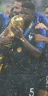
| N° | 5 |
|---|---|
| Poste | D |
| Nom | Samuel Umtiti |
| Date de naissance | 14/11/1993 (24 ans) |
| Sélection | 19 |
| But | 2 |
| Club | FC Barcelone |
| Depuis | 2016 |

| N° | 6 |
|---|---|
| Poste | M |
| Nom | Paul Pogba |
| Date de naissance | 15/3/1993(25 ans) |
| Sélection | 60 |
| But | 9 |
| Club | Manchester United |
| Depuis | 2013 |
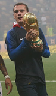
| N° | 7 |
|---|---|
| Poste | A |
| Nom | Antoine Griezmann |
| Date de naissance | 21/3/1991(27 ans) |
| Sélection | 54 |
| But | 20 |
| Club | Atlético Madrid |
| Depuis | 2014 |
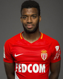
| N° | 8 |
|---|---|
| Poste | A |
| Nom | Thomas Lemar |
| Date de naissance | 12/11/1995(22 ans) |
| Sélection | 12 |
| But | 3 |
| Club | AS Monaco |
| Depuis | 2016 |
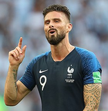
| N° | 9 |
|---|---|
| Poste | A |
| Nom | Olivier Giroud |
| Date de naissance | 30/9/1986(31 ans) |
| Sélection | 74 |
| But | 31 |
| Club | Chelsea FC |
| Depuis | 2011 |
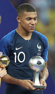
| N° | 10 |
|---|---|
| Poste | A |
| Nom | Kylian Mbappé |
| Date de naissance | 20/12/1998(19 ans) |
| Sélection | 15 |
| But | 4 |
| Club | Paris Saint Germain |
| Depuis | 2017 |
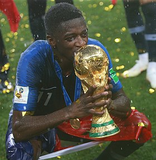
| N° | 11 |
|---|---|
| Poste | A |
| Nom | Ousmane Dembélé |
| Date de naissance | 15/5/1997(21 ans) |
| Sélection | 12 |
| But | 2 |
| Club | FC Barcelone |
| Depuis | 2016 |
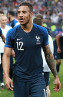
| N° | 12 |
|---|---|
| Poste | M |
| Nom | Corentin Tolisso |
| Date de naissance | 3/8/1994(23 ans) |
| Sélection | 9 |
| But | 0 |
| Club | Bayern Munich |
| Depuis | 2017 |
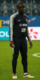
| N° | 13 |
|---|---|
| Poste | M |
| Nom | N'Golo Kanté |
| Date de naissance | 29/3/1991(27 ans) |
| Sélection | 24 |
| But | 1 |
| Club | Chelsea FC |
| Depuis | 2016 |
| N° | 14 |
|---|---|
| Poste | M |
| Nom | Blaise Matuidi |
| Date de naissance | 9/4/1987(31 ans) |
| Sélection | 67 |
| But | 9 |
| Club |  Juventus Juventus |
| Depuis | 2012 |
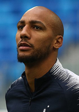
| N° | 15 |
|---|---|
| Poste | M |
| Nom | Steven Nzonzi |
| Date de naissance | 15/12/1988(29 ans) |
| Sélection | 4 |
| But | 0 |
| Club | Séville FC |
| Depuis | 2017 |
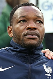
| N° | 16 |
|---|---|
| Poste | G |
| Nom | Steve Mandanda |
| Date de naissance | 28/3/1985(33 ans) |
| Sélection | 27 |
| But | 0 |
| Club | Olympique de Marseille |
| Depuis | 2018 |
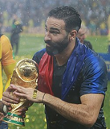
| N° | 17 |
|---|---|
| Poste | D |
| Nom | Adil Rami |
| Date de naissance | 27/12/1985(32 ans) |
| Sélection | 35 |
| But | 1 |
| Club | Olympique de Marseille |
| Depuis | 2010 |
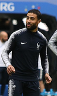
| N° | 18 |
|---|---|
| Poste | A |
| Nom | Nabil Fekir |
| Date de naissance | 18/7/1993(25 ans) |
| Sélection | 12 |
| But | 2 |
| Club | Olympique lyonnais |
| Depuis | 2015 |
| N° | 19 |
|---|---|
| Poste | D |
| Nom | Djibril Sidibé |
| Date de naissance | 29/7/1992(25 ans) |
| Sélection | 17 |
| But | 1 |
| Club | AS Monaco |
| Depuis | 2016 |
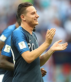
| N° | 20 |
|---|---|
| Poste | A |
| Nom | Florian Thauvin |
| Date de naissance | 26/1/1993(25 ans) |
| Sélection | 4 |
| But | 0 |
| Club | Olympique de Marseille |
| Depuis | 2017 |
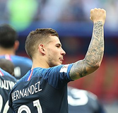
| N° | 21 |
|---|---|
| Poste | D |
| Nom | Lucas Hernandez |
| Date de naissance | 14/2/1996(22 ans) |
| Sélection | 5 |
| But | 0 |
| Club | Atlético Madrid |
| Depuis | 2018 |
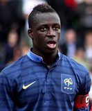
| N° | 22 |
|---|---|
| Poste | D |
| Nom | Benjamin Mendy |
| Date de naissance | 17/7/1994(24 ans) |
| Sélection | 7 |
| But | 0 |
| Club | Manchester City |
| Depuis | 2017 |

| N° | 23 |
|---|---|
| Poste | G |
| Nom | Alphonse Areola |
| Date de naissance | 27/2/1993(25 ans) |
| Sélection | 0 |
| But | 0 |
| Club | Paris Saint Germain |
| Depuis | 2015 |